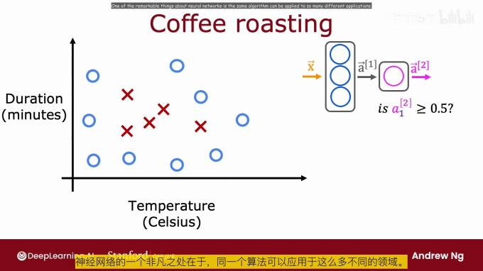
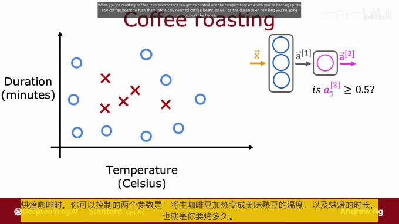
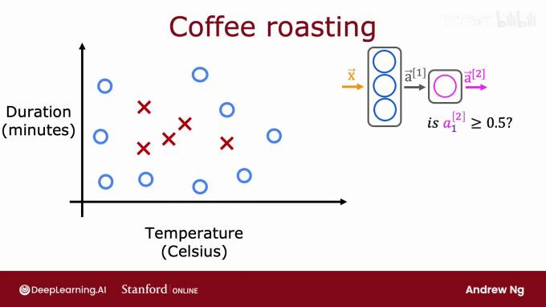
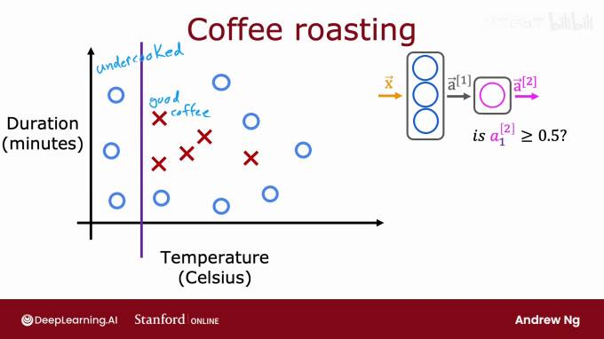
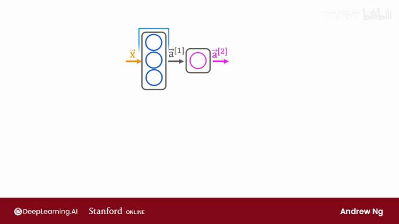
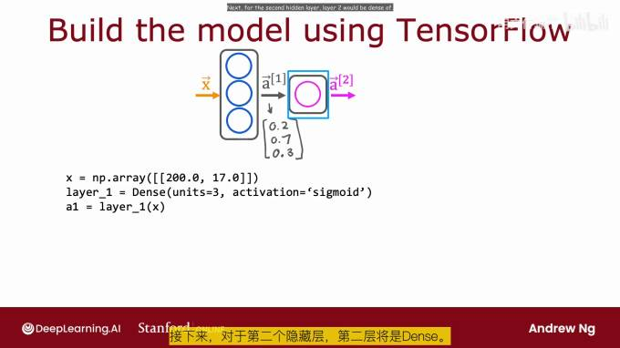
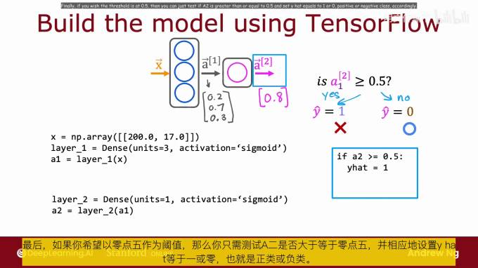
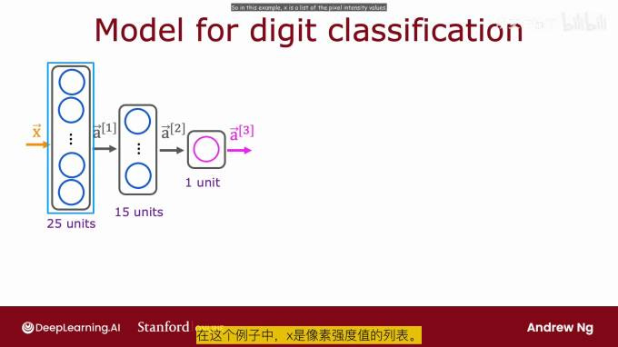

00:01TensorFlow 是实现深度学习算法的领先框架之一。我做项目的时候，TensorFlow 实际上是我最常用的。
00:11另一个流行的工具是 PyTorch。
00:15但在这个专项课程里，我们将重点关注 TensorFlow。
00:19在本视频中，我们来看看如何在代码中使用 TensorFlow 实现推理。
00:27神经网络的一个非凡之处在于，同一个算法可以应用于这么多不同的领域。

00:35所以，为了让大家在本视频和一些实验中看清神经网络在做什么，我将用另一个例子来说明推理过程。
00:48我有时候确实喜欢自己在家烘焙咖啡豆。
00:52我最喜欢的其实是哥伦比亚咖啡豆。
00:56那么，学习算法能否帮助优化，像这样的烘焙过程所得到的咖啡豆品质呢？
01:03烘焙咖啡时，你可以控制的两个参数是：将生咖啡豆加热变成美味熟豆的温度，以及烘焙的时长，也就是你要烤多久。


01:18在这个稍微简化的例子中，我们创建了一个数据集，包含不同的温度、不同的时长，以及标明我们烘焙的咖啡是否好喝的标签。
01:34这里，正类 y 等于一对应好喝的咖啡，而零，即负类，对应不好喝的咖啡。
01:44所以，理解这个数据集的一个合理方式似乎是：如果你用太低的温度烘焙，它没被烤熟，结果就是火候不足。

01:56如果你烤的时间不够长，时长太短，那也不是一炉烘焙得当的豆子。
02:04最后，如果你烤得太久或温度太高，结果你就会得到过度烘焙的豆子。
02:13所以那样也不算好咖啡。
02:15只有在这么个小三角区域里的点，才对应着好喝的咖啡。
02:21这个例子相较真实的咖啡烘焙做了一点简化。
02:26尽管这个例子是为了说明而简化的，但确实已经有人在做一些严肃的项目，利用机器学习来优化咖啡烘焙了。
02:38所以，任务就是，给定一个包含温度和时长的特征向量 x，比如二百摄氏度、十七分钟，我们如何在神经网络中进行推理，来让它告诉我们，这个温度和时长设定能否得到好喝的咖啡？。
03:00它看起来是这样的。

03:03将 x 设为一个包含俩数字的数组。
03:09输入特征是二百摄氏度和十七分钟。
03:15然后，你将第一层创建为网络的第一个隐藏层，用 Dense，左括号，units 等于三，表示这一层有三个单元或三个隐藏单元，并使用 S 型函数作为激活函数。
03:32Dense 是我们目前为止所学的那种神经网络层的另一个名称。
03:38随着你对神经网络了解得更多，你还会学到其他类型的层。
03:44但就目前而言，在我们所有的例子中，我们将只使用 dense 层，也就是你在过去几个视频中学到的那种层类型。
03:55接下来，你通过取第一层，它实际上是一个函数，并对 x 的值应用这个第一层的函数，来计算 A 一。
04:06这样你就得到了 A 一，它将是三个数字的列表，因为第一层有三个单元。
04:14为了说明，这里的 A 一可能是零点二、零点七、零点三。
04:20接下来，对于第二个隐藏层，第二层将是 Dense。 N。

04:25这次它只有一个单元，并且同样使用 S 型激活函数。
04:30然后，你可以通过将这个第二层的函数应用于来自第一层的激活值 A 一来计算 A 二。
04:39这样会得到 A 二的值，仅为说明，它可能是零点八。
04:45最后，如果你希望以零点五作为阈值，那么你只需测试 A 二是否大于等于零点五，并相应地设置等于一或零，也就是正类或负类。N。

04:59所以，这就是如何在 TensorFlow 中用神经网络做推理。
05:04这里还有一些我没有展开讲的额外细节，比如如何加载 TensorFlow 库，以及如何加载神经网络的参数 W 和。
05:16但我们会在实验中讲到这些。
05:20所以请务必去看看实验。
05:22但这些就是前向传播的关键步骤，以及如何计算 A 一、A 二，并可选择性地对 A 二进行阈值判断。
05:35我们安回到子与数子力关可题。
05:40在这个例子中，x 是像素强度值的列表。

05:45所以 x 等于这个像素强度值列表的 numpy 数组。
05:51然后，为了初始化并执行一步前向传播，第一层是一个具有二十五个单元和 S 型激活函数的 Dense 层。
06:03接着，你计算 A 一等于应用于 x 的第一层函数。
06:09要构建并通过第二层执行推理，你类似地按如下设置第二层，然后计算 a 二等于应用于 a 一的第二层 p 数。
06:23然后，第三层是第三个也是最后一个 Dense 层。
06:28最后，你可以有选择性地对 A 三进行阈值处理，以给出 y-hat 的二元预测。
06:36所以，这就是在 TensorFlow 中执行推理的语法。
06:40我之前简单提到的一件事是 numpy 数组的结构。
06:45TensorFlow 以某种特定的方式处理数据，搞清楚这一点很重要。
06:53因此，在下一个视频中，我们来看看 TensorFlow 是如何处理数据的。